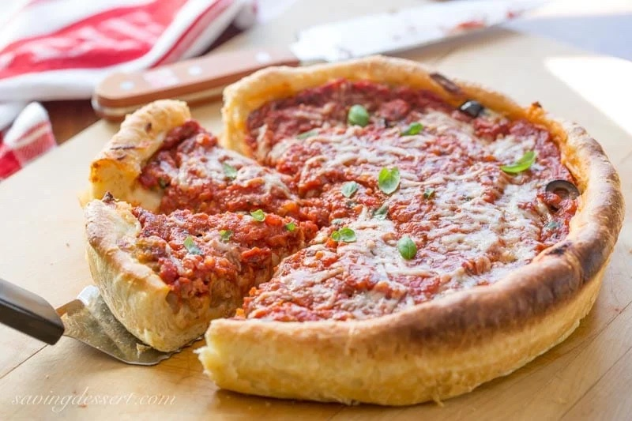

Deep Dish Pizza That Will Change Your Life

The Chicago deep dish pizza is a mouthwatering delight that originated in the Windy City.
This iconic pizza is known for its thick, buttery crust that perfectly holds a generous amount of gooey cheese, chunky tomato sauce, and a variety of toppings.
With its deep-dish structure, the pizza offers a unique and satisfying combination of textures and flavors.
Each slice is a hearty, indulgent treat that will leave you craving for more.
Whether you're a local or a visitor, trying a slice of Chicago deep dish pizza is a must-do culinary experience to truly savor the essence of this iconic city.
Ingredients!
- Dough
- Mozzarella cheese
- Tomato sauce
- Italian sausage
- Pepperoni
- Green bell pepper
- Onion
- Mushrooms
- Oregano
- Garlic powder
Step By Step Directions
- Preheat the oven to 425°F (220°C).
- Prepare the dough and press it into a greased deep dish pizza pan.
- Sprinkle a layer of mozzarella cheese on the dough.
- Add a layer of Italian sausage, pepperoni, green bell pepper, onion, and mushrooms.
- Spread tomato sauce evenly over the toppings.
- Sprinkle oregano and garlic powder on top for added flavor.
- Bake in the preheated oven for 25-30 minutes or until the crust is golden and the cheese is bubbly.
- Remove from the oven and let it cool for a few minutes before serving.
- Slice and enjoy your delicious homemade deep dish pizza!